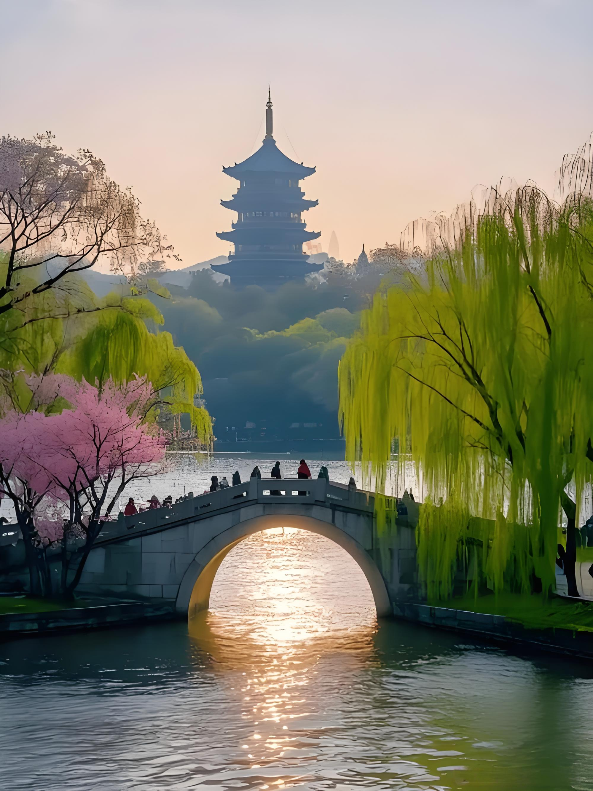

WEST LAKE
West Lake has inspired poets, painters, and travelers for over a thousand years. This UNESCO World Heritage site covers 6.5 square kilometers of serene waters, ancient bridges, and pagoda-topped hills.
The famous Ten Scenes of West Lake capture its magic through the seasons. Spring brings willows swaying in the breeze along the Broken Bridge, while autumn transforms Leifeng Pagoda into a golden silhouette against changing leaves.
Take a traditional wooden boat to drift among the lotus flowers, or stroll along the causeways that divide the lake into sections. Every view is a living ink painting, every moment a memory to cherish.
← Back to Home